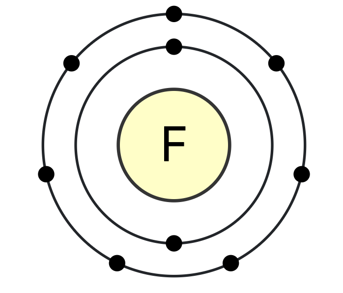

Atomic Number 9 | The Most Electronegative Element

Overview
Fluorine is a chemical element with the symbol F and atomic number 9.
It is the lightest halogen and exists as a highly toxic pale yellow diatomic gas at standard conditions.
It is extremely reactive, reacting with almost all other elements, including noble gases, under the right conditions.
Because of its extraordinary reactivity, elemental fluorine is difficult to handle
and requires special containment. In nature, fluorine is primarily found in minerals
like fluorite and fluoroapatite.
Properties & Uses
Atomic Number: 9
Atomic Mass: 18.998 u
Electron Configuration: [He] 2s2 2p5
Group / Block: 17 (p-block), Halogen
Standard State: Gas at 25 °C
Melting Point: −219.62 °C
Boiling Point: −188.12 °C
Radioactive: No (stable isotopes exist)
Fluorine is used in the production of uranium for nuclear power,
in refrigerants (though older freon-type refrigerants are now largely phased out),
and in certain high-temperature plastics like Teflon.
Fluoride ions (F−) are also used in toothpaste and drinking water
to help prevent tooth decay.
Fluorine in Action
In the video above, you can see the reactivity of fluorine with various elements and compounds.
Historical Perspective
The isolation of elemental fluorine was long a challenge for chemists due to its extreme reactivity.
Fluorite (calcium fluoride) was used by ancient metallurgists as a flux in smelting.
Chemists like André-Marie Ampère, Humphry Davy, and Louis Joseph Gay-Lussac
contributed insights into its nature, but it was only in 1886 that Henri Moissan
successfully isolated elemental fluorine using low-temperature electrolysis of potassium bifluoride.
Moissan’s discovery earned him the 1906 Nobel Prize in Chemistry.
Today, fluorine remains vital in many industrial processes, but direct handling
of the pure element is restricted to specialized facilities.